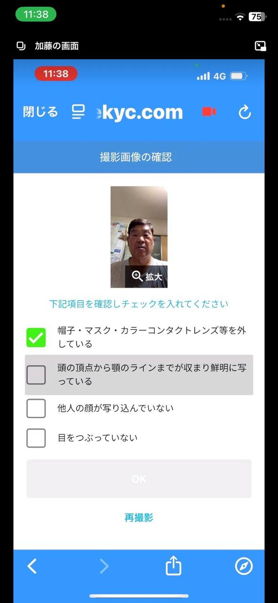
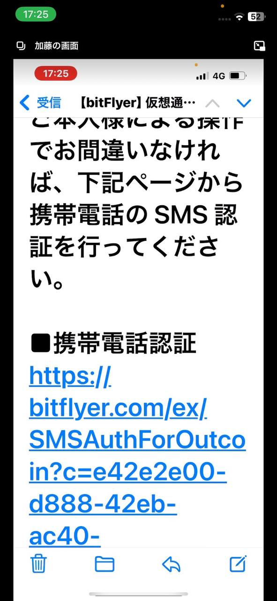

bitFlyer開設～入金手順
1.bitFlyerアプリをDL
2.左下の「アカウント作成」
3.アカウント作成 メアド入力→右上の「アカウント作成」
4.パスワード設定 入力して右上の「次へ」
5.パスワード確認画面 再入力して右上の「次へ」
6.利用規約 チェックマークを全てタップして「同意する」
7.「はじめる」をタップ
8.「携帯電話にSMSを送信する」をタップ
9.携帯の電話番号を入力→「SMSで確認コードを受取る」
10.SMSでコードが届くので入力
11.そのまま次に進む
12.「次へ」タップ
13.チェックマークを全てタップして「本人確認を開始する」をタップ
14.下記の画面通り進む。
15.画面に従って住所を入れる→チェックマーク→「次へ」
16.携帯電話番号を入力し、右上「確認」
（固定電話番号は入力しなくて大丈夫）
注意:住所は本人確認で使う身分証に記載されている内容通りに入力する。
17.内容が間違っていないか確認しながら下までスクロール→「登録する」
18.「次へ」タップ
19.チェックを入れて「次へ」
20.職業を選択し、右上「次へ」
21.
・年収＝客に合わせて選択
・金融資産＝客に合わせて選択
22.お取引の目的
・仮想通貨の購入、売却のため
・仮想通貨の受取、送付のため
23.投資経験
・客合わせるor経験無し
24.間違えないか確認して「次へ」
25.登録経緯 なんでも良いので選んで右上「次へ」
26.右上「確認」
27.入力内容確認 間違えないか確認しながらスクロールして「登録する」
28.「次へ」
29.ここから本人確認 「クイック本人確認」をタップ
30.運転免許証orマイナンバーカードを選択→チェック→「次へ進む」
31.「次へ」タップ
32.「許可」タップ
注意：ここでAndroidの場合、高確率でオーバーレイの設定が必要。
33.「撮影開始」タップ
34.身分証の表面の撮影 枠内に鮮明に写して下の「カメラマーク」をタップして撮影
注意：影や光が反射しない様に撮影
35.撮影した写真の確認
・確認して問題なければチェック項目全てタップして、「OK」
36.「撮影開始」タップ
37.斜めからの厚みの撮影
・画像はないですが、先程同様の撮影画面に切り替わるので撮影
38.確認して問題なければチェック項目全てタップして、「OK」
注意：手に持って撮影する場合、必要部分が指などで隠れないように。
39.顔写真の撮影（画像なし）
・画面通り進み、撮影をして行く。
40.撮影完了後、確認画面
・再度問題がないか確認し、チェック項目を全てタップ→「OK」

41.閉じてbitFlyerのアプリを開く
42.通知は許可しないでも良い
43.右下「メニュー」をタップ
44.客の名前の所をタップ
45.「登録内容」をタップ
46.一番下の「銀行口座情報確認」をタップ
47.振込元予定口座の情報登録を行う
・必要情報入力後、右上「登録」
48.この後は口座と本人確認共に審査待ち、審査完了のメールが来たら内容を確認して次（49.）に進む
49.審査完了後、アプリを再起動して下のメニューバーの「入出金」をタップ
50.振込先口座が表示されるので、メモをさせて入金
51.入金して反映されてることを確認する。
52.ホームの画面で販売所or取引所でイーサリアムを選択。
53.右下の「買う」をタップ
54.金額を入力して「買い注文に進む」をタップ
55.注文完了になったら「閉じる」
56.イーサの購入が完了したら再度入出金の所に行き右上の仮想通貨をタップ
57.ここで何イーサあるかメモ（自分）して、イーサリアムを選択。
58.下にある「外部イーサリアムアドレス登録」をタップ
59.メールが送信されるのでメールを確認。
60.メールを開き登録を行う。
・ラベルは客の名前など
・イーサアドレスは事前に登録したユニスワップの物を貼り付け（ペースト）
61.アドレス所有者は「お客様本人」を選択
62.送付先は「プライベートウォレット等」を選択
63.国地域・都市選択では日本を選んで「次へ」

64.確認してチェックを入れて右上「保存」をタップ
65.宛先したに登録した物があるのでそれを選択。
66.メモしておいてイーサの数を入力。
・手数料で0.005ETHが掛かるのでそれを引いた額を入力
・入力完了後、右上の「出金」をタップ
67.確認して問題なければ右下の「出金」をタップ
68.確認コードがSMSで届くので、それを入力。
69.外部送付の受付完了。
70.その後またメールが届くので確認し、中のリンクを開く。
71.最後に「携帯電話認証」をタップしたら完了。
・後はユニスワップに反映されるのを待つだけ！！
